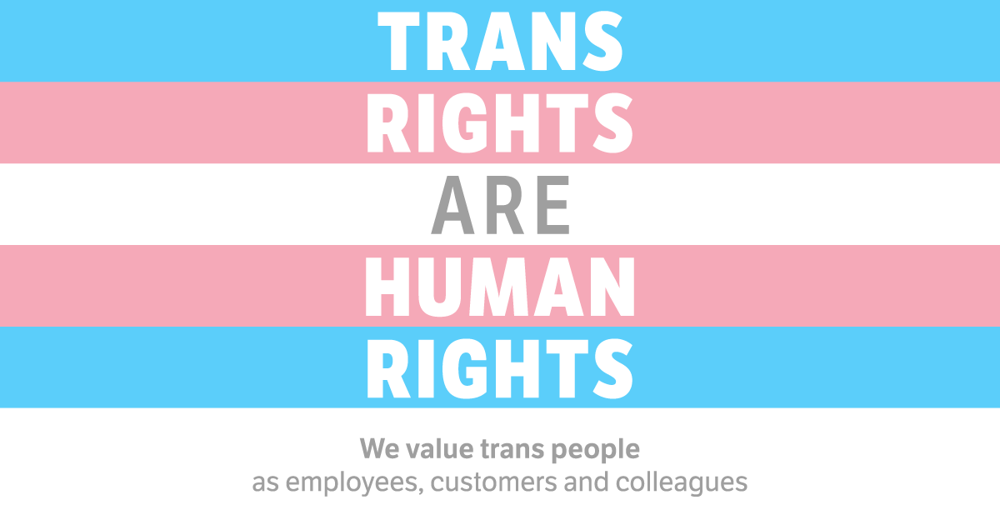

After an extensive recreational and educational background in music and ballet, I chose to dedicate my academic studies to the social sciences to hone my skills in writing and research and to develop a profound understanding of society and institutions. In May 2022, I graduated from Emory University summa cum laude with a B.A. in Sociology and a thesis that received Highest Honors. I wish to pursue a career that will allow me to use my skills, experiences, and savior-faire to ameliorate human rights issues. I am particularly interested in the healthcare system and public policy.
After one year of rigorous research and writing, I defended my undergraduate honors thesis and was awarded the distinction of Highest Honors! I had long been frustrated about having frequently experienced and witnessed the struggle to receive adequate or satisfactory health care in the U.S. My sociology major kindled my ardent curiosity about this phenomenon, and a thesis was the perfect opportunity to learn more.
My study intends to fill the gap in research on the subjective experiences of people assigned female at birth (AFAB) in recieving reproductive health care, and to obtain insight into how people use TikTok as a medium for health-related storytelling. I argue that the patterns that arise from the narratives are indicative of wider societal, cultural, and institutional problems.
April 08, 2021
OP-ED:
Doctors' right of conscience should not overshadow the importance of transgender people's access to healthcare

In my Health Inequality class, I wrote a research-based
Opinion Editorial on medical conscience clauses and
their consequences for transgender and gender nonconforming people’s access to health care.
April 28, 2022
Civil Rights & The U.S. Supreme Court
In this paper for my Civil Liberties class, I argued that the Supreme Court has had an indirect and limited influence on U.S. politics.
I wrote several articles for the online magazine Her Campus during my time at Emory University.